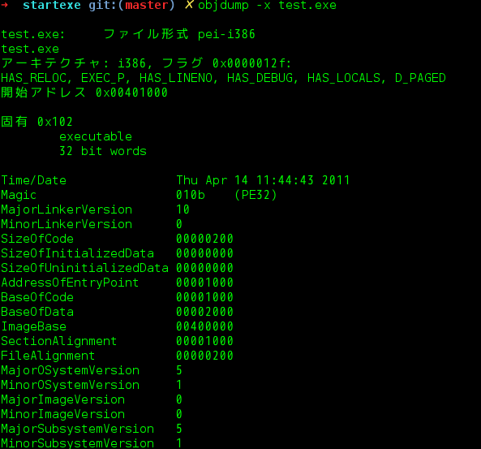
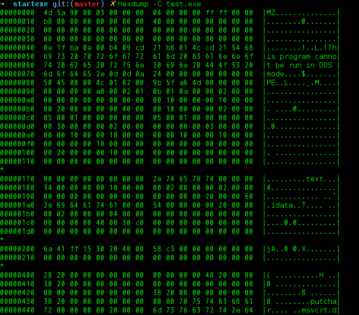
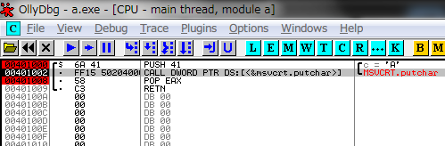

Your browser doesn't support the features required by impress.js, so you are presented with a simplified version of this presentation.
For the best experience please use the latest Chrome, Safari or Firefox browser.
Brainfuckで遊ぼう その2 @shigemk2
Node.jsでBrainfuckをごにょごにょしてみた
Brainfuckとは
以下のワードだけで構成されるプログラミング言語
+ - [ ] < > , .
| 記号 | 処理 |
| > | ポインタをインクリメントする |
| < | ポインタをデクリメントする |
| + | ポインタが指す値をインクリメントする |
| - | ポインタが指す値をデクリメントする |
| . | ポインタが指す値を出力に書き出す |
| , | 入力から1バイト読み込んで、ポインタが指す先に代入する |
| [ | ポインタが指す値が0なら、対応する ] の直後にジャンプする |
| ] | ポインタが指す値が0でないなら、対応する [ （の直後[1]）にジャンプする |
アルファベット H を出力するコード
+++++++++[>++++++++<-]>.
ではNode.jsでどうするのか
1. EXEコンパイラを作る
2. Brainfuckを実行するEXEコンパイラをつくる(x86 Windows7)
3. Brainfuckを実行するEXEコンパイラをつくる(SH-3 Windows CE 2.11)
1. EXEコンパイラを作る
2. Brainfuckを実行するEXEコンパイラをつくる(x86 Windows7)
3. Brainfuckを実行するEXEコンパイラをつくる(SH-3 Windows CE 2.11)
まずはEXEファイルの仕組みから
EXEファイルの仕組み
アルファベット Aを出力するだけのEXEファイルをobjdumpしてEXEファイルのヘッダ情報を見る

アルファベット Aを出力するだけのEXEファイルを逆アセンブルして命令を見る
アルファベット Aを出力するだけのEXEファイルをhexdumpしてバイナリの中身を見る

このバイナリを写経してNode.jsで出力すれば、動くものが作れる
とりあえず写経

ヘッダ+セクションという構造なので、然るべき場所に然るべき値を出力すれば、動くEXEファイルが作れます
で、リファクタしたやつ
プログラムで生成したバイナリ文字列をファイル出力します
以上が、EXEコンパイラの基本
1. EXEコンパイラを作る
2. Brainfuckを実行するEXEコンパイラをつくる(x86 Windows7)
3. Brainfuckを実行するEXEコンパイラをつくる(SH-3 Windows CE 2.11)
.text(実際に実行するプログラムの部分)に機械語を書き込む
当然うまくいかないので、デバッグ

主なエラー
レジスタに値が入っていないエラー
Brainfuckのファイルサイズが大きすぎて機械語が全部入らないエラー
読み込むファイルのサイズを大きく対応しようとすると他の値を全部変えないといけないトラブル
そもそもファイルが開けないOllyDbgと詳細なログを吐いてくれるWine
AA
1. EXEコンパイラを作る
2. Brainfuckを実行するEXEコンパイラをつくる(x86 Windows7)
3. Brainfuckを実行するEXEコンパイラをつくる(SH-3 Windows CE 2.11)
試すのはこちら
ヘッダはCE用に合わせる
例によって.textセクションにアセンブリを直書き
簡単なCプログラムを
逆アセして命令を確認する
WindowsCEで直接実装するのは無理なので、コンパクトフラッシュにEXEファイルをぶっこむ
WindowsCEで直接実装するのは無理なので、コンパクトフラッシュにEXEファイルをぶっこむ
WindowsCEで直接実装するのは無理なので、コンパクトフラッシュにEXEファイルをぶっこむ
WindowsCEで直接実装するのは無理なので、コンパクトフラッシュにEXEファイルをぶっこむ
Hello, World!
感想
ハードコーディングしてあるせいでアドレスの値をずらそうとしたらすごく大変